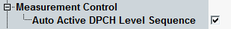

Measurement Control Settings
The "Measurement Control" parameter enables automatic settings of the signal generated by WCDMA signaling in combined signal path

WCDMA out-of-sync handling: measurement control setting
With enabled setting, the WCDMA signal changes the downlink DPCH level according to 3GPP TS 34.121 5.4.4.2 and triggers the WCDMA out-of-sync handling measurement automatically, when the measurement starts.
With disabled setting, the generation of DPCH level transitions must be initiated manually in the signaling application.
Remote command: